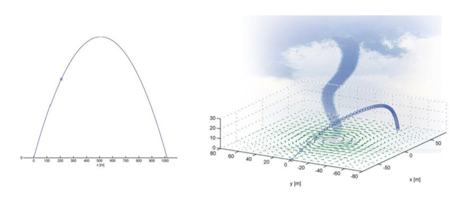

Abstract. Numerical computation is now a fundamental tool of physics, applied in both research and industry. But computing has not been an integrated part of either the contents or the form of the traditional physics education. We have integrated computing in the education from day one. This allows us to make fundamental changes in how and what we teach in the basic physics courses. The students can now work with realistic, applied problems to a large degree early in their education, and they learn to apply a problem-solving workflow that closely reflects realistic workflows they will meet in research or industry. This change in curriculum also allows for a series of new pedagogical approaches which involves both students and teachers more actively, and it allows students to participate in real research projects early in their studies. Here, we present examples of how this change in curriculum is implemented and realised in courses where computing is integrated into the course curriculum; we present studies of the students? learning process, and we present experience from student participation in research projects as early as their second semester.
This paper was originally published in Uniped, no 4, 2015 in Norwegian under a CC Attribution 4.0 license.
learning, science, computing, student-active, teaching practice, interdisciplinary
Nearly all fields have been transformed by an explosive advance of computational capacity, and the development is even stronger as the application of computational power is spread [1]. A normal laptop - the one most students own - is as powerful as a supercomputer from 10 years ago, so that computations once nearly impossible, are now accessible to everyone. Nowadays, most scientific or industrial projects aim at having a strong computing component. This is the case for fields as astronomy, geoscience, material science and bioscience, and for all aspects of physics. But this development is not followed in the teaching of physics. A study on the tasks assigned to fresh graduate students from NTNU [2] shows that computing makes an important share of the task, but that the education has not given the students a strong enough background in numerical computation.
This should make education professional worry. Our goal is to educate students for a 40-year long career, but they lack basic knowledge that is necessary from day one. However, there has been and there is an ongoing intense research on how to teach physics. This activity has brought great understanding in what works in the physics curriculum [3], but it has been directed towards the form of the education, not on its content.
A modern physics education must have a computing perspective. The goal is not to make the physics students into informatics students, but to integrate computing in the execution of the subject, so that we educate skilled computing experts. Today, computing is used as an integrated part of the execution of the subject, and the goal is that this integration is reflected in the education, so that students use computing as naturally as they use today traditional mathematics. In order to achieve this, computing should be integrated in all fields, so that students apply computing frequently and throughout the studies.
The integration of computing will also give numerous pedagogical merits. Physics, as other scientific fields, faces meaningful challenges in motivation and dropouts. With the integration of computing we can introduce realistic and research-oriented problems early on in the studies aspects that have been asked for by students [4] and we can give the students more robust strategies for problem-solving, which is closer to what they will encounter in research and industry. A computing perspective can also simplify the presentation of the subject and rekindle the interest that in the first place attracted so many to this field.
In this article we will come up with examples as to how computing can be integrated in the physics education, what pedagogical gains are expected to be achieved, and share experiences from the integration of computing. The first part of the article describes the build-up of physics education at the University of Oslo. Thereafter it discusses examples, experiences, and consequences for future development of the education.
The Physics study programme at the University of Oslo is shown in the table below:
| Semester | Course 1 | Course 2 | Course 3 |
| 3rd | MAT1120: Linear Algebra | optional | FYS1120: Electromagnetism |
| 2nd | MAT1110: Calculus and Linear Algebra | MEK1100:Vector Calculus | FYS-MEK1100: Mechanics |
| 1st | MAT1100: Calculus | MAT-INF1100: Modeling and Computations | INF1100: Introduction to programming with scientific applications |
The education has been structured this way since 2003, but in 2007 the first informatics course was made into a course more relevant to the scientific courses. The study has a method package constituted of three courses in the first semester, two courses in the second, and one course in the third semester. All these method courses have integrated computations in the curriculum, and they constitute the substance for further use of computations in other subjects.
The first semester is especially well integrated. The course MAT1100 gives the mathematical substance through basic Calculus, it is followed up by the corresponding numerical methods in MAT-INF1100, and in INF1100 the students learn to implement these problems in a concrete programming language. The connection between these courses can be illustrated with the example in the table below.
| Week 1 | Week 2 | Week 3 |
| The derivative is defined in MAT1100 | The numerical derivative is introduced in MAT-INF1100 | The derivative is implemented in Python in INF1100 |
| \( \frac{d f}{d x}=\lim_{\Delta x\rightarrow 0} \left( \frac{f(x+\Delta x)}{\Delta x} \right) \) | \( \frac{d f}{d x}\approx \frac{f(x+\Delta x)}{\Delta x} \) | def dfdx(f, x, dx=1E-5): return (f(x+dx)-f(x))/dx |
It is our experience that this method of teaching gives a deeper understanding for the mathematical concepts, and at the same time it gives a more applicable knowledge. It does not though make the content easier, since connecting the same terms across subjects demands a higher degree of abstraction.
Programming is a basic knowledge and fundamental way of thinking that supports and expands mathematical ways of thinking, but it requires a lot of practice in order to be mastered. Our experience is therefore that programming should be introduced early in the course of education, and thereafter be practiced continuously. In order to secure a good integration, a new adapted learning material in programming and physics has been developed [5] [6].
The goal with the further build-up of the program is to integrate and repeat the skills earned from the method-courses into the physics courses. This is a large development process, and for now we have only completed a good integration in a few courses. There are numerous courses that contain some elements in computing - simple examples and simple exercises that can give some training in computing - but this does not take into use the whole spectrum of possibilities that a complete integration of computing could give.
The course FYS-MEK1100 offered in the second semester at the University of Oslo covers a basic introduction of Newton\,'s mechanics. Corresponding courses can be found in nearly all Universities all around the world, and curriculum, examples, exercises and reading material have been well developed for a long time. The course contains the use of Calculus, especially the solution of differential equations, to solve problems in mechanics - a subject that is apt to integration of computing. We have developed a course with complete integration of computing, and through this work we have gained some experiences with general pedagogical interest:
Mechanics has a long tradition going back to Newton, with well-developed examples and exercises. The primary component of the course is the application of Newton's second law, saying that acceleration of a body is equal to the sum of the forces acting on the body. Through Calculus students have learned methods for finding the movement of a body given its acceleration, and in mechanics they learn how to apply this to physics problems. The challenge in education lies in the fact that very few realistic problems can be solved without the use of numerical computation. Traditionally, the subject has been limited by what can be solved without computations, and this is why a number of problems have been developed, which are solvable, but miss realism. In addition, the problems are often only marginally solvable: a small change in the formulation of the problem makes it impossible to solve with analytical (not computational) methods that the students have learned. The analytical solution is often a special case that cannot be generalised. This can be frustrating for students, because they must follow a narrow path through a jungle of difficulties that they have no control over. The choice of this path is in addition often difficult to explain to the students, since it is based on experience and not on transmissible principles - a definite method is chosen since it is now known that it brings to the answer, based on a long experience of trial and error.
Fortunately, there is a simple solution to this problem - by letting go the requirement of having an analytically solvable problem, and instead look at problems that can also be solved numerically on computers. This requires a slightly different presentation of the curriculum, but it gives a totally robust solution method that the students can apply, and that always works. The traditional presentation of the subject follows the problems that could be solved analytically, and the solution methods for these problems. The new presentation, where computing is integrated, follows a partition of the curriculum in separate laws for reciprocity - laws of motion - so that the problems can be solved independently of whether the resulting equation are solvable. This gives the students a more robust toolkit that is generalisable, allowing the students to look at more realistic problems, covering the subject in a more realistic manner.
With the integration of computing we can support explanations and theory from realistic data. For example, we can teach students about motion by looking at Usain bolt running at the Olympic Games in Beijing. Data on the running is available, with position as a function of time. We can use this data to introduce the terms velocity and acceleration, and thus analyse Bolt's acceleration throughout the running. We bind this analysis with the physical understanding by developing a realistic model for the run, based on a set of laws of motion that take into account air resistance, transition from the crouching position to fully extended position, and physical exhaustion. The model can be solved numerically and is compared to data, and it can also be simplified and solved analytically as well. This creates a working process that is very similar to the one physicists use when they face a real life problem setting. As another example on the use of data, students learn about the movement of planets by downloading data from NASA, analysing the data and find Newton's Law of gravity, and then apply Newton's Law of gravity to study the movement of planets in a more general setting. By starting with Newton's Law of motion and computing the orbit of a body numerically, we will normally find an elliptic or hyperbolic orbit releasing the gravitational field. It is only for a very special choice of initial conditions that we will get a circular orbit - which is the one that can be simply analysed analytically. By starting with data and applying the computations, students achieve a realistic, general learning process, instead of starting with an artificial assumption stating that planets travel in a circular orbit. The most important aspects of this approach are: the students experience physics as a powerful, applicable tools; they learn a realistic working process that they will have use in the future; they can work from early on with realistic problem settings, something that is both motivating and inspiring.
Another classical example from physics is the study of the orbit of a cannonball without air resistance - a parabolic orbit. This example has a long tradition and illustrates how often a problem is simplified down to - and above - its simplest components. But the same learning goals can also be achieved by letting the students look at a modified version of that example: by computing the orbit of a sensor shot through a tornado (see Figure 1). The velocity field of the tornado is given, but every student must develop a model on her/his own and model the orbit of the sensor. The most important element in the learning process is when students sit next to each other as they solve the problem. All students will get slightly varied results, depending upon their choice of elements in the theory, and/or different starting points for the sensor. When a student compares her results with the results of her fellow student sitting next to her, they will have to reason out whether the differences are due to errors or differences in the models - and in that discussion the student is forced to apply and formulate her arguments. This process of formulation can be a central element in building the basic concepts for the understanding of physics [7].
Figure 1: Illustration of the classical bullet orbit and of the orbit of a sensor shooting through a tornado. The underlying equations are the same, but for a tornado it is only possible to solve the problem with numerical computations.

In the Mechanics course we often ask the students to write a computer program to find the solution to a given problem. For well-chosen problems, this will push the students to formulate their understanding of physics and adapt that understanding to a tangible set of algorithmic steps. This process has a lot in common with explaining the solution to another student - a process which has been shown to be very important to building a good understanding of physics (Deslauriers et al. 2011; Mazur, 1996). This will also help students to better their understanding of the subject: it is important to note that often understanding is an illusion, but this illusion can be unraveled when students translate their understanding into an algorithm.
An example on this is to ask students to make a program to find the movement of a body influenced by friction. The classical Law of Friction distinguished between static and dynamic friction. Dynamic friction is simple to implement in a program, while to implement static friction, and especially the transition from dynamic to static friction, it is necessary to thoroughly think about the underlying physical concepts. In such a case, the formulation of an algorithm will give the students a more general insight into friction than through basic exercises.
Integration of computing gives the students practical, operative knowledge that makes it possible for them to work with problems close to the world of research, and have a great contribution to research projects. Through the creation of well directed problem settings, a good instruction-based guidance and long-term follow-up, students can take part in research groups as valuable members, as early as in the Bachelor degree, with the possibility of participating to publications, as proved in [8].
Studies on the student's learning outcome in FYS-MEK1100 [7] show that students often adopt their own's “modelling mode” when they program. This can make the process of connecting mathematical, physical and programming aspects of the problem setting into a challenge. Students have a tendency to think about every problem separately, and don\,'t use for example the physical intuition to interpret and correct the code. A better presentation of the assignments, with stronger weight on connections across fields, can improve this situation. The use of computations seems to both give a better understanding of the model, and give more possibilities to explore models outside the box they have been developed for - so that students also get an experience of discovery and experimentation.
Exam schemes integrating the use of computations can be quite good to evaluate the students understanding of the subject. This can for example be done by asking the students to write a program to find the answer to an exercise. In mechanics, it is simple to check if a student knows the difference between a scalar and a vector in a mathematical formulation of the problem or in a program solving the problem. But a computer program will also show if the student understands a wider set of aspects related to the model. For example, the model of a rope will have different behaviour if the rope is stretched out or pressed; this difference comes out more clearly when the student formulates her understanding in a program.
Teachers who have worked with the integration of computing have experienced that it is important to introduce programming separately before it is applied to other subjects: experience tells that it is twice as difficult to study two subjects, namely Physics and Programming simultaneously as compared to just studying Physics in one course. Also, it has become clear that the longer the case-studies with computations the more they contribute to building a positive learning environment, with good discussions among students and between student and teacher. It seems to be easier for the students to ask a teacher about programming and implementation than about physics; but all questions lead anyways to healthy debates and discussions, resulting in a rich learning payoff for the students [3] [9].
There exist highly impressive pedagogical and professional arguments for the integration of computing in the study of Physics - and truly in every other study with a mathematical component. Integrating computations moves the perspective from form to content, and it gives a necessary modernisation to the content of Physics as a science. This also gives the students a toolbox, which is very useful for the applicability of the subject; it makes it possible to introduce realistic and applied problem settings; it motivates and inspires the students even when some effort is necessary; it opens up for the possibility of discussions around Physics, among students. The greater challenge today is the lack of good learning material and good examples - a challenge that calls for a vigorous boost, but that will also be an inspiring journey that every ambitious teacher would be eager to embark upon.